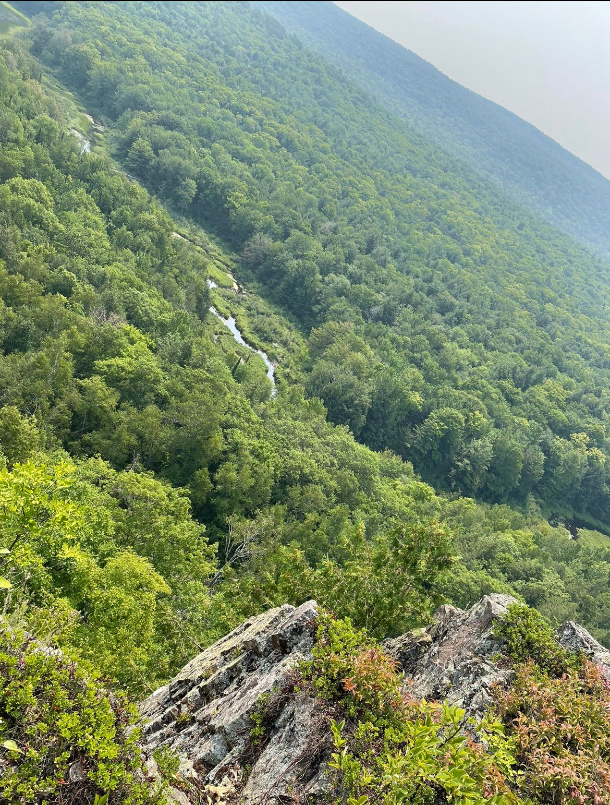

Back in May of 2019 my family and I were living in Las Vegas, Nevada. We had decided that enough was enough of that dusty and dry place, so we wanted
to leave the desert and move somewhere with just a little more humidity. About two weeks before we were going to leave Nevada, we thought we
shoud go check out the west coast.. I mean we were so close anyways. This is when the idea of traveling the entire Pacific Coast Highway (PCH)
came into play. We loaded up enough clothes for a week, grabbed the dog, and headed on our way. Below is a picture I captured from the Golden Gate Bridge.
Although we had made many stops on our journey through California, I wanted to show the Seqouia National Monument. Sadly, we didn't get a chance
to see the HUGE Seqouia trees that many people have seen online..you know the ones you can literally drive a car through! But I was very happy with
the campground we had stayed at, as it was on top of a medium sized river; didn't get a chance to swim in it either due to the temperature of the water being
very cold cause it was spring fed. The thing I loved most about the park was how lushious and green everything was. The forest felt so alive and fresh. Below
is a photo I took showing the size fof some of the smaller Seqouias that were covered in bright green moss.

As I stated above, my family and I had lived in Las Vegas for almost a year. As dry and dusty as it may be..it is still a very beautiful and lively place too
live (especially somone who just turned 21). I got to experince many cool things in my time living there, including the big ferris wheel and staying in the
penthouse of the Bellagio with a marvelous view of the fountains. I ate great food, made many friends, stayed in the coolest places, and got to fully experince
the fabulous las vegas. I have been back since to see some friends of mine, but my heart was simply not there. Below is a photo I took from the previouslt mentioned
penthouse.

About an hour and a half away from the Las Vegas strip lies the Valley of Fire state park in Overton, Nevada. I think many people (including myself) think that it
gets its' name due to the fact of how hot it is there...which they aren't wrong, that whole darn state is a giant toaster. But I believe the name comes from the absolutley
breath taking red and orange colors in the rocks and in the sand. Alot of the rocks and structures have been worn away over time, but alot still remains. The Valley of Fire
is made up from Aztec sandstone which contribute to why so much has been worn away, because sandstone is basically just compressed sand. Below is a photo I took on
my first trip (yes it's pretty enough to go more than once) to the National park.
I think one of the most exciting yet also the biggest let down of a place that I have visited would have to be the Hoover Dam. Although
it does technically reside in two states, I decided to list it under Arizona, because I saw that state sign first. It was very exciting
because of the sheer size of the structure itself. Also the brdige near the damn itself was equally interesting. I would have to say that
I was a bit let down..as to the fact that once a HUGE lake surrounding the massive structure... is now nothing more than a very large
puddle. All in all, I had a great time visiting here. The photo below is one I took on the bridge near the damn.
Although Utah is a very pretty state, we did not stay longer than a day here because we had some road to cover on our journey. I don't have
much to say on the entire state of Utah due to the lack of time spent there....but I can say that one day I would like to return and actually
explore the place. Here is a photo I captured on our road trip from Green River, UT
Now what we missed in Utah, we sure made up for in Colorado. Aside from California, Colorado is one state I honestly wouldn't mind living
in. I lived here when I was a small child, but that doesn't count in my adult memory. Now that I have visited Colorado as an adult, I can
truly say that the beauty in this state is hands down one of the best views I have had in my life. Driving through the state can be difficult
from all the down grades in the road going through the mountains, and can be come challenging on your car from breaking going down hill so much.
Below is a photo I captured somehwere along the way through the Rocky Mountains.
Grand Junction, CO
We had stayed in Grand Junction for just one night, but I was able to go walk around and explore some smaller parts of the city. it
felt like I was walking forever before I finally stumbled upon a gorgeous little park. After traveling for so long I needed a place
to just sit down and unwind..boy did I find it. I probably sat at this park for a good hour just watching a family of ducks swim
around in this man made pond all while enjoying the setting sun. I didn't get to see much of the city, but this one little
spot had made it worth my time. Below is a photo I tried to capture of the sun setting at this park.
In August of 2019 my family and I took a trip all around the great lake state. We covered the full mit and the upper penninsula. Mind
you..before this trip, I had not the slightest idea that the state of Michigan even HAD an upper penninsula; I though it was just the
mitten shape. Michigan is another state that I have fallen in love with, and it reminds me a lot of California. One place we went to,
that wasn't even on our trip plan, was the Lake in the Clouds located in the Porcupine Mountains. You have to hike a little bit to be
able to get this view, but boy it was worth it. The photo below was captured at the Lake in the Clouds, MI.

Grand Traverse, MI
This brings me to the current destination of my life long journey; Grand Traverse, Michigan. Initially my sister and I came up here when
one of my family members was suffering some medical issues after the trip we had taken in 2019 and they had got admitted to the hospital
here in TC. I say it like it's present tense...that's because, well, it is. I decided to move in with them for the winter months of
Northern Michigan. Sometimes I do regret staying up here for the winter due to the freezing temperatures, but I have truly grown to adore
Michigan. The photo below was captured the morning my sister and I visited our family member in the hospital. We had been up all night
and decided to go get some breakfast and eat it by the lake while the sun rose.
Hello, welcome to the about me section of the website. Where do I start? My name is Erin Madison, but for some reason my parents decided
that they would call me Maddie..it's a weird thing my family does. I was born in 1997 in St.Louis, Missouri. I grew up all over the state;
from Rolla, to Arnold, to South City, I've lived all over the show me state. Currently I live with my parents and we travel most of the year
in a cargo van and travel trailer. I pride myself on the number of states and places I have visited and even lived. After going to 27 states
I've ended up in Michigan with hopes of moving to San Francisco in the next few months. A few hobbies of mine: the piano, tattooing, and
creating customized shoes for people. My life has been interesting so far, and I look forward to my travels to come!